Crecimiento Económico
Sistemas de pensiones y crecimiento económico
Política redistributiva generacional
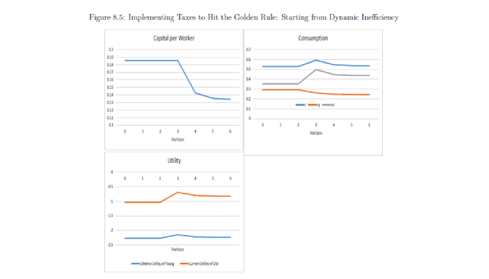
Política redistributiva generacional

Tipos de pensiones
¿Qué son las pensiones?: son pagos regulares durante el retiro. Pueden financiarse con contribuciones de trabajadores activos, recursos presupuestarios o activos acumulados; la definición no presupone una cuenta de inversión individual.
Dos tipos de plan de pensiones:
Contribuciones Definidas:
Cada empleado tiene una cuenta de retiro donde deposita una cantidad definida de manera recurrente
Los beneficios dependen de la cantidad de dinero acumulado en la cuenta al retirarse
Beneficios Definidos
Los empleados reciben una cantidad definida anualmente al retirarse por parte del gobierno o su empleador
Los beneficios dependen del nivel de salario en los años previos al retiro y los años (antigüedad) en el puesto
Es decir, para aumentar la pensión se necesita o mayor antigüedad o mayor nivel de salario final
Tipos de pensiones
- Dos tipos de plan de pensiones:

Tipos de pensiones
- Dos tipos de plan de pensiones:
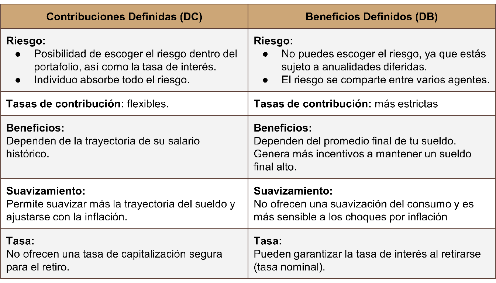
Pensiones y crecimiento económico
“Population Aging and PAYG Pensions in the OLG Model” (Cipriani; 2013)
Se consideran 2 modelos: Fertilidad Endógena y Fertilidad Exógena.
En general, la caída en la fertilidad produce 3 efectos:
Efecto de la transferencia intergeneracional: Menos aportaciones para los ancianos futuros.
Efecto en la creación de capital: Aumento en el ratio de capital-trabajo.
Efecto de la calidad infantil: Tener o no hijos.
Paper de Fanti y Gori vs paper de Giam Pietro Cipriani para ver qué efecto gana.
Pensiones y crecimiento económico
“Population Aging and PAYG Pensions in the OLG Model” (Cipriani; 2013)
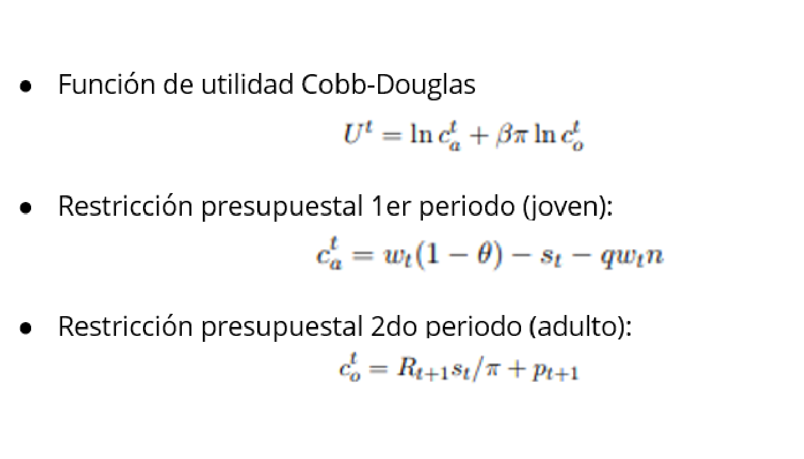
Pensiones y crecimiento económico
“Population Aging and PAYG Pensions in the OLG Model” (Cipriani; 2013)

Pensiones y crecimiento económico
“Population Aging and PAYG Pensions in the OLG Model” (Cipriani; 2013)
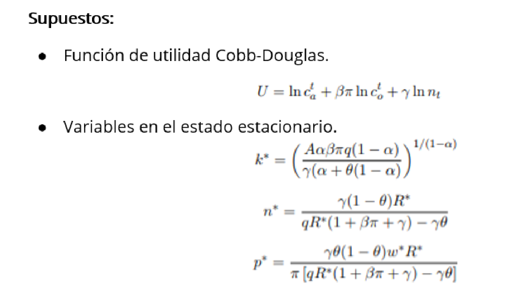
Pensiones y crecimiento económico
“Population Aging and PAYG Pensions in the OLG Model” (Cipriani; 2013)
Cuando la esperanza de vida crece:
En el modelo con fertilidad exógena, los beneficios del PAYG caen en el estado estacionario.
En el modelo con fertilidad endógena, un aumento en la longevidad trae un efecto negativo en la fertilidad y en los beneficios por pensiones.
Por lo tanto, cuando metes longevidad en tu modelo, el envejecimiento de la población efectivamente puede ser un problema para las pensiones (Contrario a Fanti y Gori).
Pensiones y crecimiento económico
“Aging and Public Pensions in an Overlapping-Generations Model” (Meijdam y Verbon; 1997)
Como la población ha envejecido, los impuestos a las pensiones van a tener que aumentar. (Modelo de Ramsey y Modelo OLG).
Ramsey: Preocupación por generaciones futuras (horizonte infinito).
Consecuencias del envejecimiento:
Aumentar la tasa de contribución
Se necesita menos acumulación para mantener el ratio de capital-trabajo.
¿Qué pasa cuando hay envejecimiento en la población con el esquema de PAYG?
Pensiones y crecimiento económico
“Aging and Public Pensions in an Overlapping-Generations Model” (Meijdam y Verbon; 1997)
Supuestos:
Todos los individuos son idénticos excepto por su edad.
Impuestos lump-sum.
Una vez que envejecen consumen el retorno del ahorro más la transferencia del gobierno.
Agentes son no altruistas.
Economía cerrada por lo que Inversión=Ahorro.
Función de utilidad social.
Pensiones y crecimiento económico
“Aging and Public Pensions in an Overlapping-Generations Model” (Meijdam y Verbon; 1997)
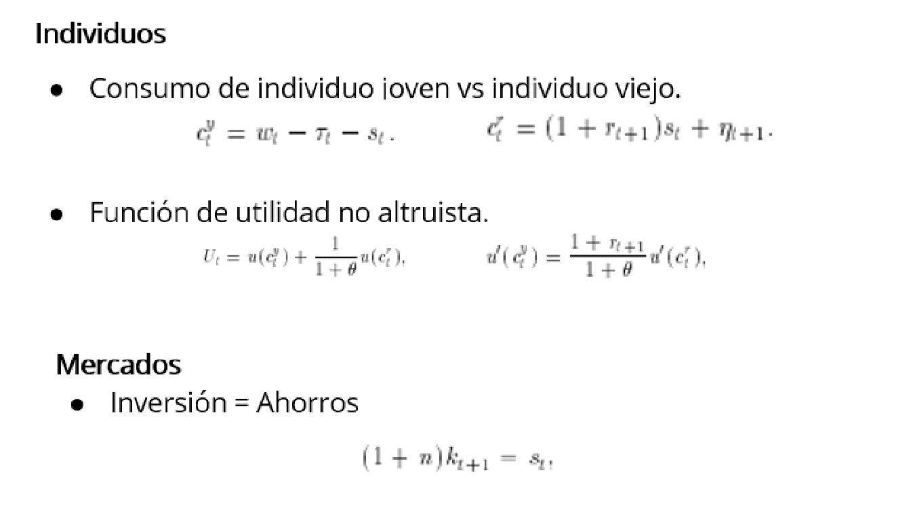
Pensiones y crecimiento económico
“Aging and Public Pensions in an Overlapping-Generations Model” (Meijdam y Verbon; 1997)

Pensiones y crecimiento económico
“Aging and Public Pensions in an Overlapping-Generations Model” (Meijdam y Verbon; 1997)
Corto plazo. Disminución en “n” no prevista:
Brinco en el ratio de capital-trabajo.
Se da un efecto de reducción del capital.
Aumenta redistribución entre los jóvenes y viejos por el ratio de dependencia.
En el caso de un cambio en el crecimiento de la población inesperado y de una vez por todas, el cambio en el ratio de dependencia no afecta el consumo inicial total.
Pensiones y crecimiento económico
“Aging and Public Pensions in an Overlapping-Generations Model” (Meijdam y Verbon; 1997)
Corto plazo. Disminución en “n” prevista:
No hay un brinco en el ratio de capital-trabajo como cuando la caída en n es imprevista.
Caída inicial en el consumo total, dado que se trata de un modelo OLG.
Largo plazo. Disminución en “n”:
El acervo de capital se mantiene sin cambios.
Reducción del capital: el consumo baja en el largo plazo.
Pensiones y crecimiento económico
“Aging and Public Pensions in an Overlapping-Generations Model” (Meijdam y Verbon; 1997)
Resultados:
La persona joven sabe que tendrá que trabajar más tiempo, tiene menos incentivos a ahorrar cuando es joven.
Dado que más agentes viejos trabajan, el stock de capital per cápita (\(k_t\)) y el producto por trabajador (\(y_t\)) disminuyen. Esto no necesariamente implica que el producto agregado (\(Y_t\)) decrece, porque a pesar de que el capital agregado (\(K_t\)) se reduce (por la reducción en ahorro), el factor trabajo (\(L_t\)) está aumentando.
Por lo general es mayor la disminución en el stock de capital agregado que el incremento en mano de obra, por lo tanto el producto agregado suele disminuir. Esto dependerá de la elasticidad del capital (\(\alpha\)).
Efectos del aumento en la edad de retiro
La persona joven sabe que tendrá que trabajar más tiempo, tiene menos incentivos a ahorrar cuando es joven.
Dado que más agentes viejos trabajan, el stock de capital per cápita (\(k_t\)) y el producto por trabajador (\(y_t\)) disminuyen. Esto no necesariamente implica que el producto agregado (\(Y_t\)) decrece, porque a pesar de que el capital agregado (\(K_t\)) se reduce (por la reducción en ahorro), el factor trabajo (\(L_t\)) está aumentando.
Por lo general es mayor la disminución en el stock de capital agregado que el incremento en mano de obra, por lo tanto el producto agregado suele disminuir. Esto dependerá de la elasticidad del capital (\(\alpha\)).
Efectos del aumento en la edad de retiro
A pesar de que más trabajadores mantienen a menos retirados, como el ingreso por trabajador disminuye, el beneficio de seguridad social por unidad de tiempo puede disminuir dada una tasa de impuesto sobre la nómina.
Esto dependerá de qué tan grande es el tiempo trabajado necesario para retirarse, de ser alto, los beneficios aumentan.
Esto podría resultar contraproducente al objetivo del gobierno de reducir la carga del presupuesto gubernamental sin disminuir los beneficios de seguridad social o sin aumentar la tasa impositiva.
Efectos del aumento en la edad de retiro
“The effects of the raising-the-official-pension-age policy in an overlapping generations economy” (Miyazaki; 2014)
Muchos países desarrollados están enfrentando los problemas de la sustentabilidad de la seguridad social como consecuencia de la disminución en la tasa de fertilidad y aumento en la esperanza de vida.
Para sustentar el sistema de seguridad social actual, los países han decidido reducir los beneficios de las personas retiradas o aumentar la edad para retirarse.
Efectos del aumento en la edad de retiro
“The effects of the raising-the-official-pension-age policy in an overlapping generations economy” (Miyazaki; 2014)
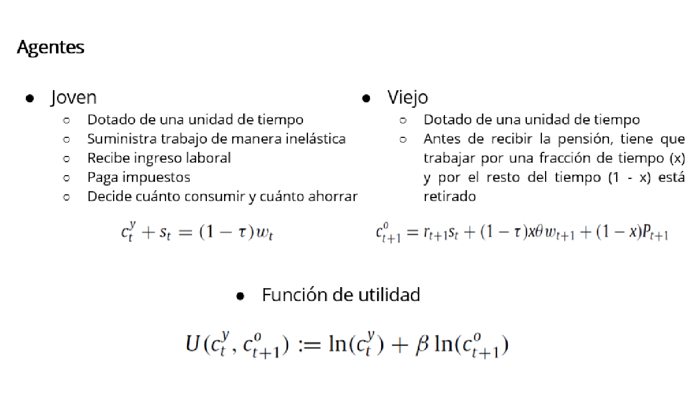
Efectos del aumento en la edad de retiro
“The effects of the raising-the-official-pension-age policy in an overlapping generations economy” (Miyazaki; 2014)
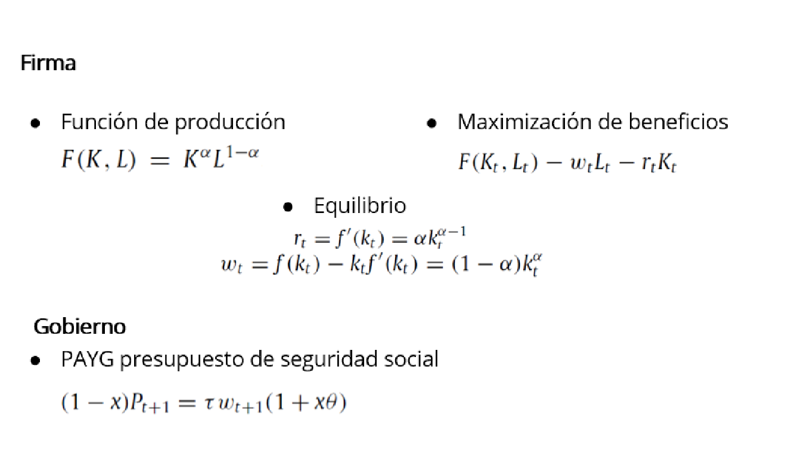
Efectos del aumento en la edad de retiro
“The effects of the raising-the-official-pension-age policy in an overlapping generations economy” (Miyazaki; 2014)

Efectos del aumento en la edad de retiro
“The effects of the raising-the-official-pension-age policy in an overlapping generations economy” (Miyazaki; 2014)
Producción:
En el estado estacionario, la producción por unidad de trabajo disminuye en x. En cuanto a la producción agregada, existe una única \(\alpha^*\) tal que:
\(\alpha<\alpha^*\): la producción agregada incrementa para toda x.
\(\alpha\) entre \(<\alpha^*\) y \(1/2\): dependiendo de donde esté, la producción agregada tenderá a incrementar o a decrecer.
\(\alpha>1/2\): la producción agregada disminuye.
Efectos del aumento en la edad de retiro
“The effects of the raising-the-official-pension-age policy in an overlapping generations economy” (Miyazaki; 2014)
Resultados:
Se estudian los efectos de la política de aumento de la edad de retirarse en un modelo OLG.
Esta política no siempre aumenta la producción en una economía.
Trabajar más tiempo aumenta la mano de obra, mientras que disminuye el capital a través del ahorro
El beneficio de seguridad social por unidad de tiempo puede disminuir
Eficiencia en redistribución de pensiones
“On the intergenerational Pareto efficiency of pay-as-you-go financed pension systems” (Breyer; 1989)
PAYG puede otorgar una mejor TIR comparado con un sistema de financiamiento de capital si la suma de las tasas de crecimiento de la población y del ingreso por trabajador exceden las tasas de interés en inversiones productivas.
Problemas:
Salarios y tasas de interés exógenas -> economía “pequeña y abierta”
No se consideran sistemas mixtos
Se consideran sistemas maduros
Eficiencia en redistribución de pensiones
“On the intergenerational Pareto efficiency of pay-as-you-go financed pension systems” (Breyer; 1989)
Supuestos:
2 períodos: trabajador y pensionado
Número de trabajadores en cada período t: \(N_t=N_0 G^{t}\)
Cada trabajador está dotado de una unidad de un bien único
Mercados de capitales perfectos
Consumo en edad laboral de cada integrante de la generación t: \(c_t=1-b_t^{k}-b_t^{p}\)
Sin costos de transacción, los pagos de pensiones para la misma generación a la edad de retirarse son: \(z^{p}_{t+1}=Gb^{p}_{t+1}\) y \(z^{k}_{t+1}=Rb^{k}_{t}\)
Eficiencia en redistribución de pensiones
“On the intergenerational Pareto efficiency of pay-as-you-go financed pension systems” (Breyer; 1989)
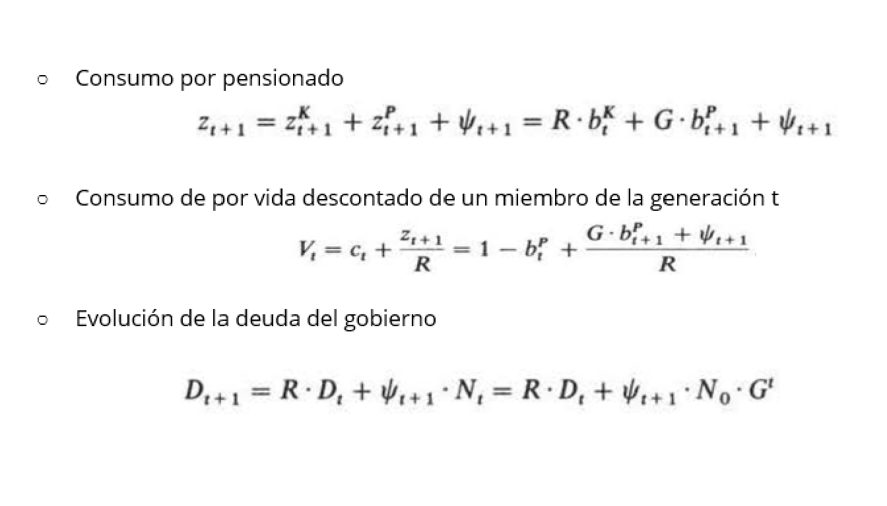
Eficiencia en redistribución de pensiones
“On the intergenerational Pareto efficiency of pay-as-you-go financed pension systems” (Breyer; 1989)
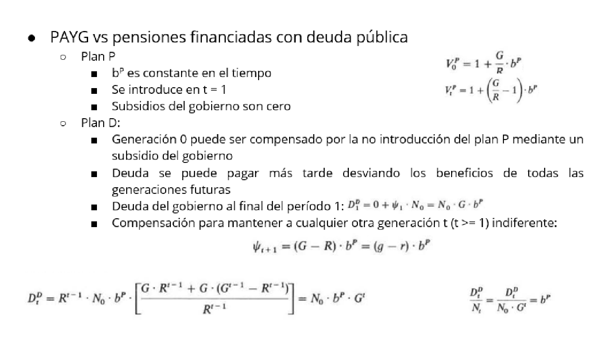
Eficiencia en redistribución de pensiones
“On the intergenerational Pareto efficiency of pay-as-you-go financed pension systems” (Breyer; 1989)
Resultados:
Si PAYG se sustituye por un sistema de financiamiento de capital es imposible compensar a los retirados en la transición por las pérdidas incurridas sin perjudicar al menos a una generación posterior.
La decisión entre los sistemas de seguridad social no se reduce a un criterio de eficiencia en Pareto, si no implica conflictos de distribución entre generaciones.
Sistema de pensiones en México
El antiguo esquema - dos elementos:
Sistema de beneficios definidos parcialmente fundado (IVCM), administrado por el IMSS
Operó como un esquema PAYG.
La Ley de 1973 requiere un mínimo de 500 semanas reconocidas, además de los requisitos de edad, baja y conservación de derechos. IMSS, pensión de vejez.
Aportaciones del 8.5% de los salarios.
Las reservas actuariales eran utilizadas para financiar otros rubros de la seguridad social, principalmente la salud (estructura demográfica y entorno macroeconómico lo permitían).
Fondo para la vivienda administrado por el INFONAVIT:
- Aportaciones del 5% de los salarios.
Sistema de pensiones en México
Cálculo de las pensiones (antiguo esquema):
La base se calculaba cómo un porcentaje del salario promedio de los últimos 5 años trabajados.
Se añaden incrementos por cotizaciones reconocidas posteriores a las primeras 500 semanas, según las reglas del esquema.
A mayores salarios , el porcentaje se reduce (efecto redistributivo).
Para compensar la erosión del valor real de las pensiones, estas se indexaron al salario mínimo en 1989.
Sistema de pensiones en México
La necesidad de la reforma:
Pensiones inadecuadas:
Trabajadores con alta rotación perdían derecho a una pensión (no reunían las semanas reconocidas requeridas o no conservaban vigentes sus derechos).
El requisito mínimo de 500 semanas y la pensión mínima podían afectar los incentivos a cotizar. La pensión individual también depende de los requisitos de edad, derechos y de su fórmula de cálculo.
El subregistro salarial reduce las contribuciones y altera la base de cálculo de la pensión. Su interacción con la pensión mínima debe analizarse sin suponer que declarar un menor salario eleva automáticamente la pensión.
Sistema de pensiones en México
Desequilibrios financieros:
A partir de 1960 la menor tasa de natalidad y la mayor esperanza de vida, transforman la estructura demográfica de México.
El índice de dependencia comienza a crecer. El pago de pensiones crece, deteriorando la situación financiera del IMSS.
Los beneficios de los jubilados se incrementaron:
- La pensión mínima pasó de 35% del salario mínimo en 1989 a 100% en 1995.
Sistema de pensiones en México

Sistema de pensiones en México

Sistema de pensiones en México
Consecuencias:
El nivel de reservas actuariales no era suficiente para afrontar el valor presente neto de la creciente población mayor y la elevada evasión.
Contribuciones actuales no eran suficientes para financiar en el mediano y largo plazo los beneficios mayores concedidos a los trabajadores.
Sistema de pensiones en México
La reforma de 1997:
Se pasa de un sistema parcialmente fundado a uno cien por ciento fundado.
Administrado por fondos privados (AFORE) e invertidos por SIEFORES.
Contribuciones tripartitas (trabajador, empleador, gobierno).
En el diseño original de 1997, el requisito era de 1,250 semanas de cotización. Este parámetro es histórico: fue modificado por la reforma de 2020.
La referencia histórica al 13.5% depende de los conceptos incluidos y del salario considerado; no debe usarse como una tasa uniforme de aportación al retiro ni como parámetro vigente.
El fondo administrado por el INFONAVIT se mantiene de forma separada.
Se crea un órgano regulador (CONSAR).
Sistema de pensiones en México
- Costos de la reforma de 1997:
La reforma implicó tres costos principales.
Jubilados bajo viejo esquema mantienen sus beneficios.
- Después de agotarse las reservas del IMSS, el gobierno asume el pago.
Los trabajadores de transición, podrán elegir retirarse bajo el antiguo esquema siempre que sus beneficios acumulados bajo este sean mayores.
El gobierno está obligado a aportar a los fondos para el retiro individuales bajo el nuevo esquema.
Sistema de pensiones en México

Sistema de pensiones en México
Oportunidades a futuro:
Incremento en los activos bajo administración de SIEFORES.
Nuevas oportunidades de inversión.
Un ambiente de menores rendimientos y necesidad de diversificación.
Sistema de pensiones en México
“Modelo para el sistema de pensiones en México: diagnóstico y recomendaciones” (BBVA; 2014)
La reforma del sistema de pensiones IMSS en 1997 limitó el creciente costo fiscal del anterior esquema de reparto.
El SAR ha tenido efectos macroeconómicos favorables para México:
Incremento significativo del ahorro financiero
Estímulo de los mercados financieros locales.
Sin embargo, la cobertura de empleo y pensiones no se ha desarrollado como se esperaba.
- Objetivo: Desarrollar un modelo de proyección macroeconómica y actuarial para simular las tasas de cobertura y reemplazo esperadas para el período 2012-2050.
Sistema de pensiones en México
“Modelo para el sistema de pensiones en México: diagnóstico y recomendaciones” (BBVA; 2014)
- Cálculo de contribuciones:

Sistema de pensiones en México
“Modelo para el sistema de pensiones en México: diagnóstico y recomendaciones” (BBVA; 2014)
- Nuevo saldo = Saldo anterior × (1 + tasa de rendimiento neta) + Nueva aportación. Se supone que la aportación se realiza al final del periodo.
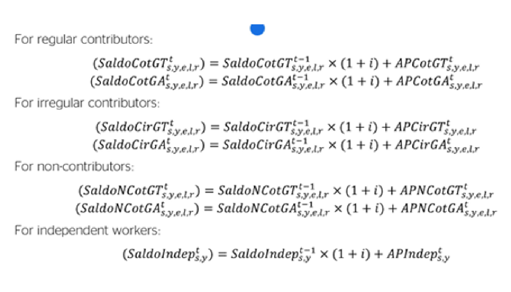
Sistema de pensiones en México
Costo fiscal de las pensiones:
El costo fiscal del sistema de pensiones del IMSS se compone de:
Financiamiento de pensiones L73,
Financiamiento del MPG, cuando se agoten los fondos de la cuenta individual,
Cuota Social,
Contribuciones del gobierno a la cuenta individual, equivalentes al 0.225% del salario del trabajador.
Sistema de pensiones en México
- Distribución de los salarios:

Sistema de pensiones en México
- Distribución de los salarios:
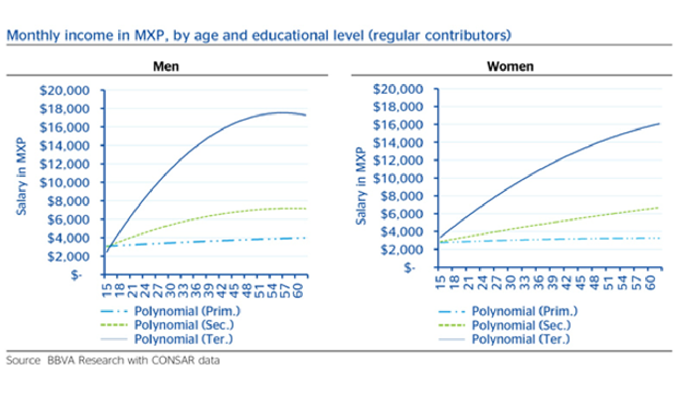
Sistema de pensiones en México
- Distribución de los salarios:

Sistema de pensiones en México
- Distribución de los salarios:

Sistema de pensiones en México
- Las tasas de cobertura laboral proyectadas para cotizantes regulares, seguirán siendo bajas. El gráfico derecho muestra que la cobertura de las pensiones para los mayores de 65 años aumentará del 14% en 2011 al 22% en 2050.
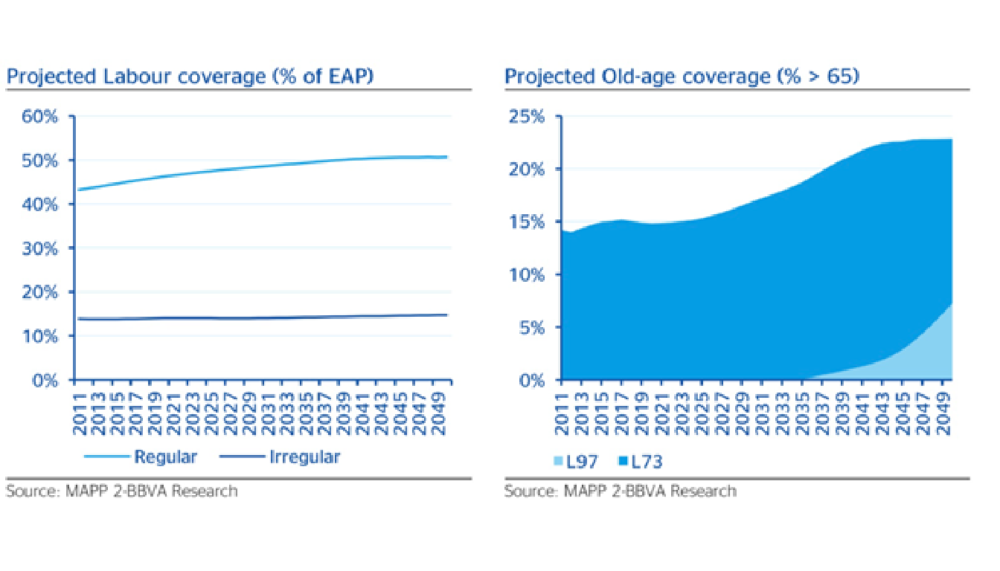
Sistema de pensiones en México
- El costo fiscal incluye el pago de pensiones L73, MPG, así como la Cuota Social y otras contribuciones gubernamentales a las cuentas individuales de los trabajadores activos.
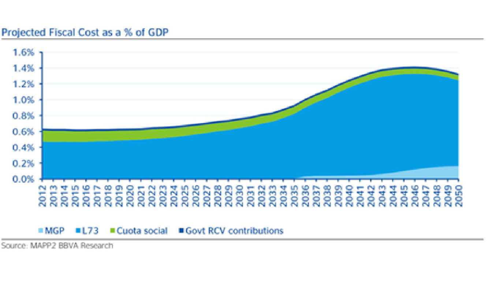
Sistema de pensiones en México
Resultados: La posibilidad de obtener pensiones adecuadas quedará restringida a quienes tengan condiciones socioeconómicas con una larga trayectoria laboral.
Propuesta de reforma:
Incrementar la tasa de cotización obligatoria
Eliminación progresiva de la jubilación anticipada
Incorporación obligatoria de trabajadores independientes
Experiencias internacionales
“When do we start? Pension reform in aging Japan” (RIETI; 2016)
- Japón: Tasa de fertilidad disminuye mientras expectativa de vida incrementa.
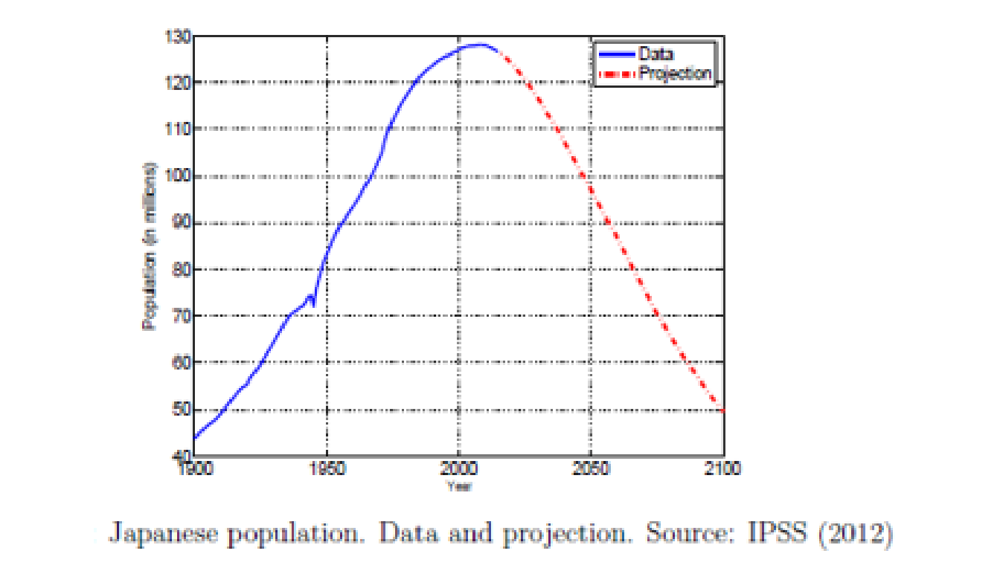
Experiencias internacionales
“When do we start? Pension reform in aging Japan” (RIETI; 2016)
- La población de Japón está envejeciendo (tasas de fertilidad por debajo de niveles de reemplazo por 40 años; expectativa de vida mayor a economías desarrolladas).

Experiencias internacionales
“When do we start? Pension reform in aging Japan” (RIETI; 2016)
- La población de Japón está envejeciendo (tasas de fertilidad por debajo de niveles de reemplazo por 40 años; expectativa de vida mayor a economías desarrolladas).
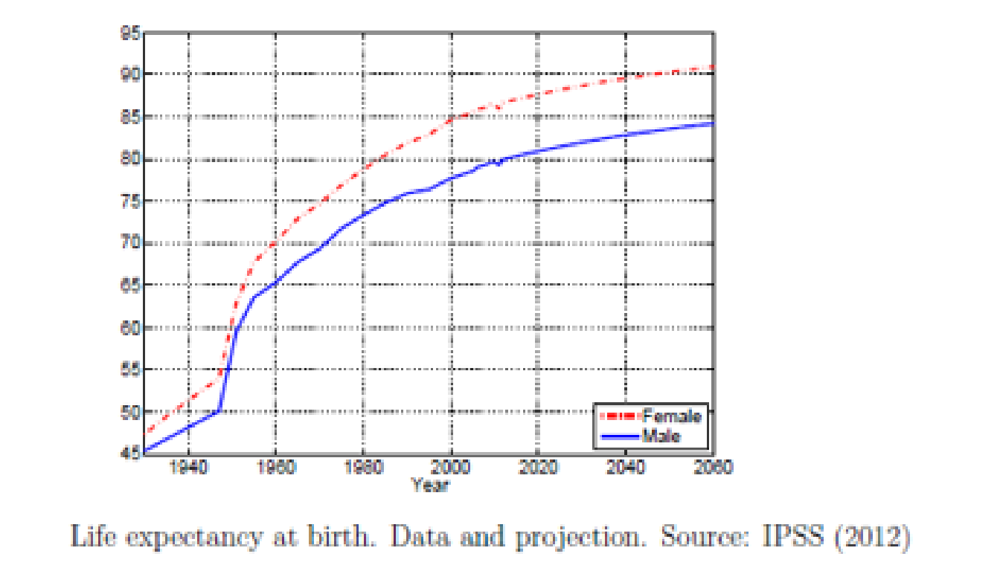
Experiencias internacionales
“When do we start? Pension reform in aging Japan” (RIETI; 2016)
- Ratio de dependencia incrementará de 10% en 1950 a 80% en 2050.
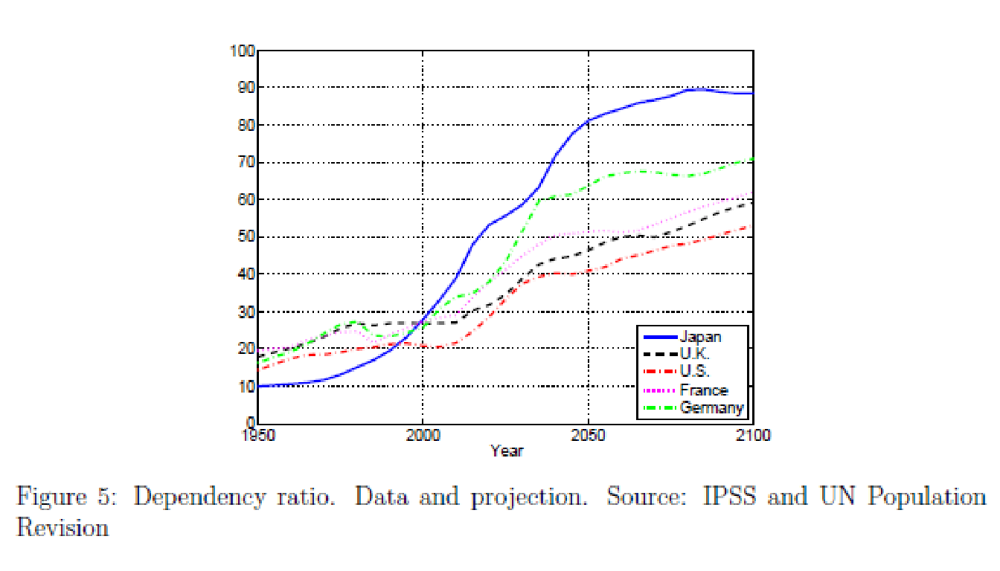
Experiencias internacionales
“When do we start? Pension reform in aging Japan” (RIETI; 2016)
Japón: Modelo de una reforma en el sistema de pensiones:
Aumento en la edad de retiro 3 años (65 a 68) gradualmente.
Recorte de gradual a lo largo de 30 años del 20% en beneficios (recorte a “replacement rate” = % de la pensión vs salario en años laborales)
¿Cuál es el impacto de demorar esta Reforma en Japón?
Se plantean 3 escenarios para inicio de reforma: 2020, 2030 and 2040.
Modelo económico: Equilibrio general de generaciones traslapadas calibrado con datos demográficos y económicos de Japón.
Experiencias internacionales
“When do we start? Pension reform in aging Japan” (RIETI; 2016)
- No hacer la reforma implicaría una desaceleración económica.
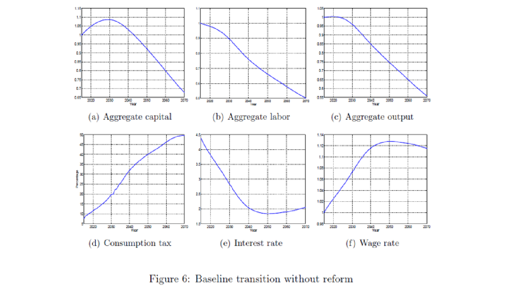
Experiencias internacionales
“When do we start? Pension reform in aging Japan” (RIETI; 2016)
- Demorar la reforma prolongará impacto económico.
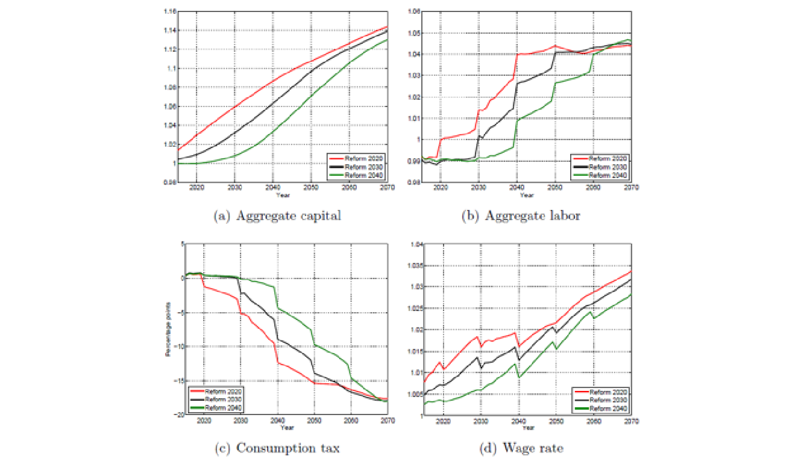
Experiencias internacionales
“When do we start? Pension reform in aging Japan” (RIETI; 2016)
- En el momento de la reforma comienza a aumentar el bienestar social.